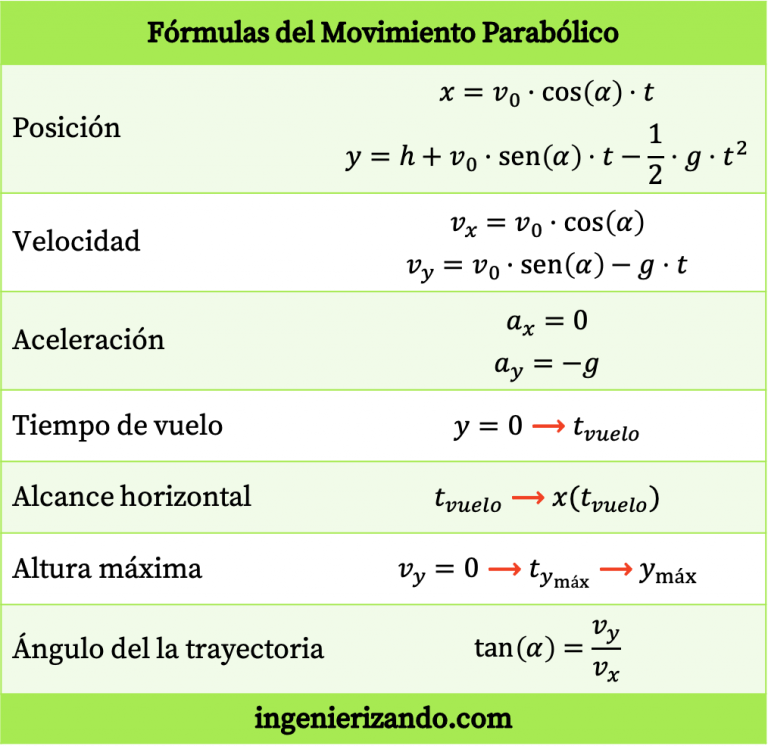

¿Qué es Tiro parabólico?
El tiro parabólico consiste en arrojar un objeto o proyectil con cierto ángulo y dejar que se mueva bajo la acción de la gravedad. Si no se considera la resistencia del aire, el objeto, sin importar su naturaleza, seguirá una trayectoria en forma de arco de parábola. Para su estudio, el tiro parabólico se desglosa en dos movimientos superpuestos: uno horizontal sin aceleración, y el otro vertical con aceleración constante hacia abajo, que es la gravedad. Ambos movimientos poseen velocidad inicial.
Características del movimiento parabólico
- La principal característica del movimiento parabólico es que la trayectoria que describe el cuerpo móvil es una parábola
- Otra característica del movimiento parabólico es que es causado por la aceleración de la gravedad. El cuerpo que describe la trayectoria parabólica empieza con una velocidad vertical positiva, por lo que al principio va hacia arriba, pero por efecto de la gravedad la velocidad vertical va disminuyendo hasta llegar a ser negativa y entonces el cuerpo va hacia abajo.
- De modo que la componente horizontal de la velocidad de un movimiento parabólico es constante, mientras que la componente vertical de la velocidad va disminuyendo.
- Por lo tanto, el movimiento parabólico es la unión de dos tipos de movimientos: el movimiento horizontal es un movimiento rectilíneo uniforme y, por otro lado, el movimiento vertical es un movimiento rectilíneo uniformemente acelerado.
- La altura máxima del movimiento parabólico se logra cuando la componente vertical de la velocidad es nula.
- En un movimiento parabólico se desprecia el rozamiento del cuerpo con el aire en toda la trayectoria.
Ejemplos de movimientos parabólicos
- El lanzamiento a canasta de un tiro de baloncesto.
- El disparo de un proyectil.
- El chute de un balón de fútbol
Ecuaciones del movimiento parabólico
-
Posición
En un movimiento parabólico la componente horizontal de la posición se define mediante la fórmula del movimiento rectilíneo uniforme (MRU), mientras que la expresión de la componente vertical de la posición es la fórmula del movimiento rectilíneo uniformemente acelerado (MRUA). Así pues, las ecuaciones que describen la trayectoria de un movimiento parabólico son las siguientes:

- x es la coordenada horizontal del cuerpo.
- y es la coordenada vertical del cuerpo.
- v_0 es la velocidad inicial.
- \alpha es el ángulo inicial de la trayectoria.
- t es el tiempo transcurrido.
- h es la altura inicial del cuerpo.
- g es la aceleración de la gravedad, cuyo valor es 9,81 m/s2.
-
Velocidad
En el movimiento parabólico la componente horizontal de la velocidad es constante en toda la trayectoria, por lo que para calcularla simplemente tenemos que multiplicar la velocidad inicial por el coseno del ángulo de inclinación. Por otro lado, la componente vertical de un tiro parabólico viene definida por la ecuación del movimiento rectilíneo uniformemente acelerado. Así pues, la componente vertical de la velocidad es equivalente a la velocidad inicial por el seno del ángulo de inclinación menos la aceleración de la gravedad por el tiempo transcurrido.

- Vx es la componente horizontal de la velocidad.
- Vy es la componente vertical de la velocidad.
- Vo es la velocidad inicial.
- a es el ángulo inicial de la trayectoria.
- t es el tiempo transcurrido.
- g es la aceleración de la gravedad, cuyo valor es 9,81 m/s2.
-
Aceleración
En todos los movimientos parabólicos la aceleración del cuerpo siempre tiene el mismo valor. La componente horizontal de la aceleración es nula, mientras que la componente vertical de la aceleración es el valor de la gravedad con el signo negativo.
- ax es la componente horizontal de la aceleración.
- ay es la componente vertical de la aceleración.
- g es la aceleración de la gravedad, cuyo valor es 9,81 m/s2.
-
Tiempo de vuelo
El tiempo de vuelo es el tiempo que tarda el cuerpo que realiza el movimiento parabólico en tocar el suelo. Por lo tanto, el tiempo de vuelo es el tiempo que transcurre desde que el cuerpo empieza la parábola hasta que toca el suelo.
-
Alcance horizontal
El alcance horizontal máximo se logrará cuando el cuerpo toque el suelo, cuyo instante es equivalente al tiempo de vuelo. Por lo tanto, para calcular el alcance horizontal primero se debe sacar el tiempo de vuelo y, posteriormente, se debe sustituir el valor del tiempo de vuelo en la ecuación de la posición horizontal del movimiento parabólico.

-
Altura máxima
En un movimiento parabólico, la altura máxima se consigue cuando la componente vertical de la velocidad del cuerpo es nula. Así pues, para determinar la altura máxima se debe igualar a cero la componente vertical de la velocidad, de ahí encontraremos el instante en el que se consigue la altura máxima y, por último, tenemos que sustituir el instante de tiempo calculado en la ecuación de la posición vertical.

-
Formulas Generales
